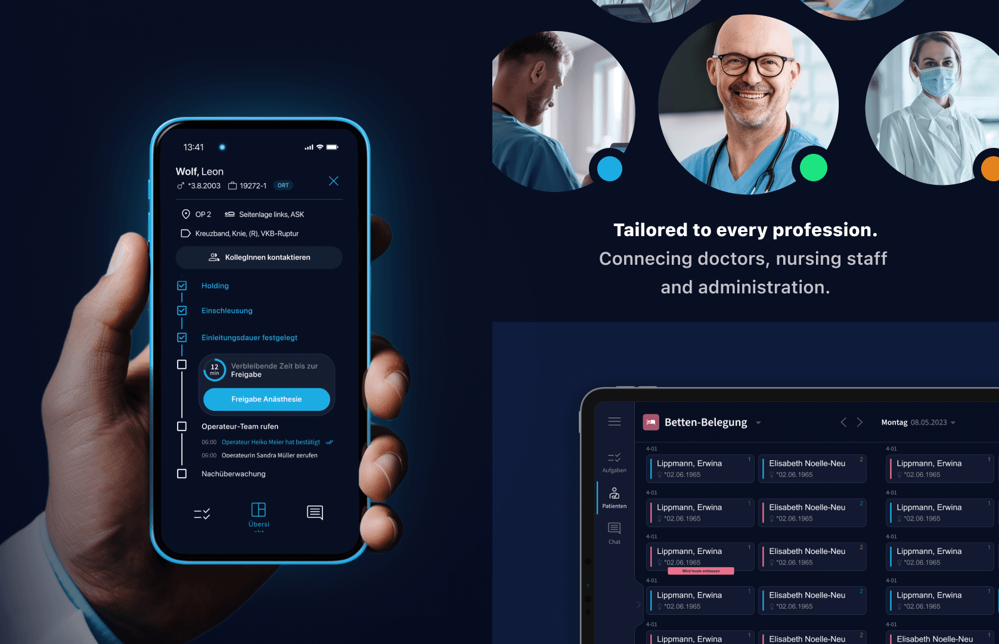
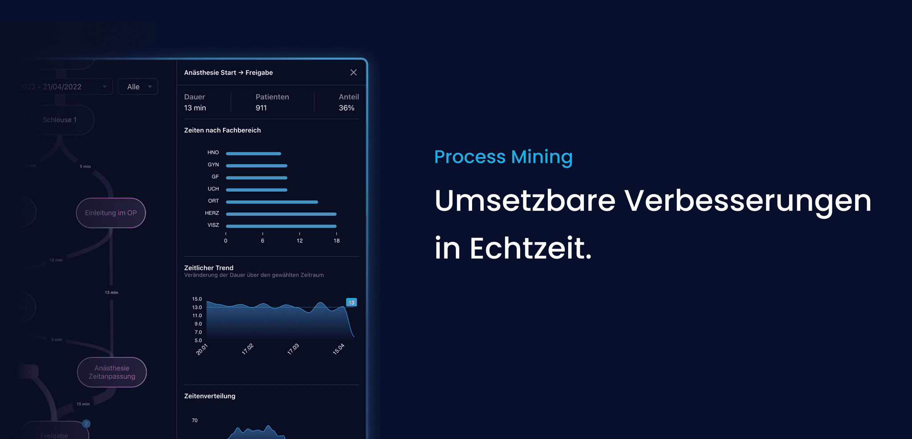

Powering the Hospitals of Tomorrow. Today
sqior is revolutionizing how hospitals organize, coordinate, and optimize patient care.
I was leading design for a suite of cross platform hospital assistants that streamline workflows, reduce cognitive load, and give clinicians more time for care. Built a scalable design system and shaped intuitive, role-specific experiences for healthcare teams.

